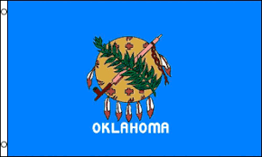

Welcome to the next next review! Today we will be reviewing five random states websites. Then we will be rating the sites out of 100 points at the end. Today we will be lookign at:
For starters the site looks pretty outdated and is very dull. The pictures are not very good and do not show anything really inspiring. The next thing I would like to note is that there are a few pages that do not load and say there is an error. This is not very impressive. Next I would like to say that this site does not change the zoom to fit in the screen properly. A cool thing I found is the archives. There are some very cool pictures and articles. Some pages also load at different speeds than others. I am not sure if it the school wifi or if it it the site itself. But the site does seem easy to navigate which is a great thing. Overall, I am pretty dissapointed in the looks of Alaska's site but it does seem fairly easy to navigate which gives it some points.

Right off the bat Iowa's site is very professional. I bet this site has been redone within the last few years. The site changes to fit within any size window which is a huge plus. On the first page is has nice pictures and it even has facts about the state which I think is a nice touch. It also has stats on the umemployment rate, median household income, and highschool graduation rates. I think this is also a great touch because with these good stats people may want to move there. This site is very easy to navigate! The font is also great and the colors and different font sizes are very inviting anf playful. It is very easy to find anything you will need from the government. There is also a large welcoming search bar. Overall, I am impressed with Iowa's site.

At first glance oKlahoma's site looks recently updated and very user friendly. There are very professional pictures on the first page. There are also some popular resource quicklinks which is pretty helpful. There are pictures with in most of the links that you can go to. It is also very interesting and impressive that there is a translate button at the top right of the page. I think that is a great idea but I do wonder how acurate it is. I like the colors and I like the the site overall it is very eye appealing. I do want to note that there are a ton of links under state agencies which makes it a little challenging to get to the link you want to. I do not really like their menu but I do think one will be able to find where they need to fo fairly easily. The site does work with with multiple screen sizes which is a great thing. Overall, I am prerry satisfied with this site.

In first looking at Tennessee's looks pretty impressive. There is a tone of pictures which make the site more light. The colors and text are also good which makes the site lict to use and light on the eyes. It is also a very simple which is great for the user. The menu is pretty norman and seems pretty easy to use and find where you need to go. I do like how if you press on something in the menu it brings you to a different page where the links under the main menu names and their sub menues are bigger. There is also a directory which I think is very helpful to find who you may be looking for. I also like how there is news at the bottom in addition to a calendar and Upcoming Public Meetings schedule which means people are consteltly updating the site which is good. The site also works well in multiple screen sizes which is great in this mobile age. The pages do load quiuckly and I did not find that any had an error. Overall, I like like this site, they did a good job.
I really like this site. Right off the bat it is very professional. The pictures are great and professional. It is very very pleasing to the eyes. Everything flows very nicely. I also like the titles of the menu bar at the top. It seems like they did a lot of thinking about the specifically wanted on the site. They have every resource for anyone who lives in Vermont could need from the government. From small businesses, to taxes, to covid relief, everything is right there, east to find. All the pages load fast which is a plus. The website does work great with multiple screen sizes. If you so not see your the service tou need in the menu there is a page with all the services and you can search with the begining letter which I like. I also really like the search bar more specifically the "I WANT TO:" bar. I like how they did this. They are trying to be different which I appreciate. I also really like how there is a learn tab in the menu. I really really like this site.
Powered by Fiocchi Custom Sites LLC.